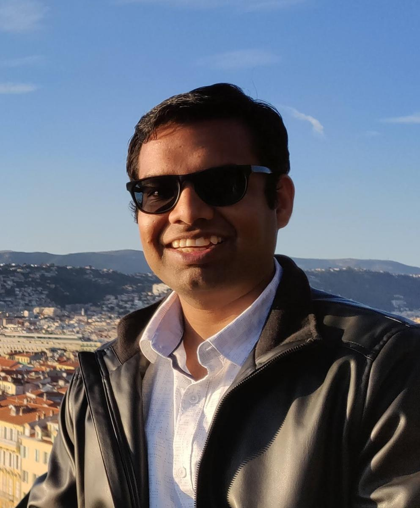
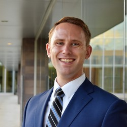
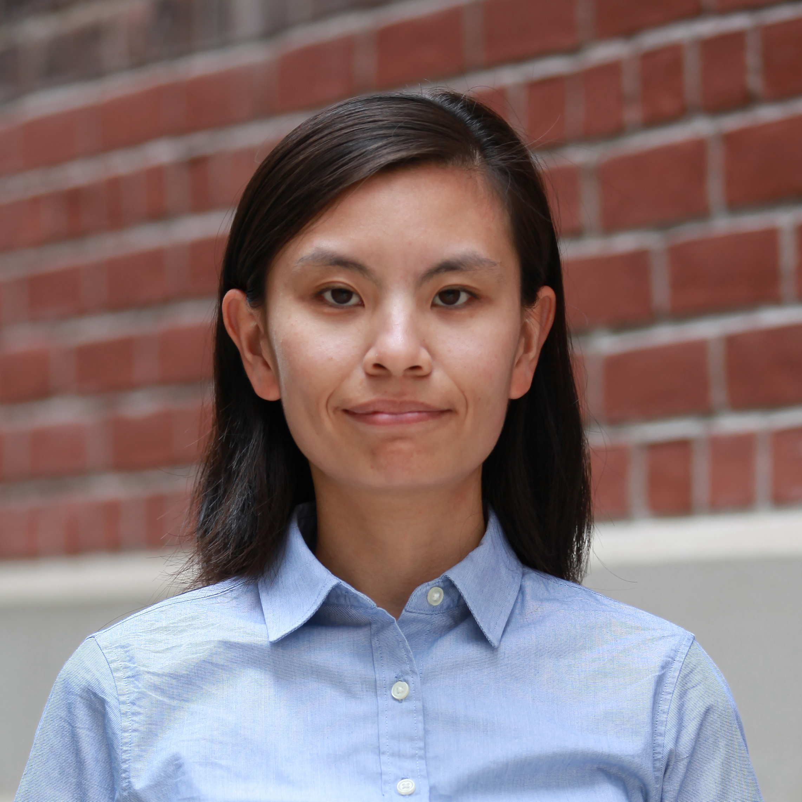
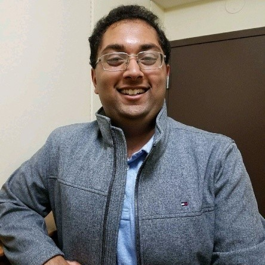
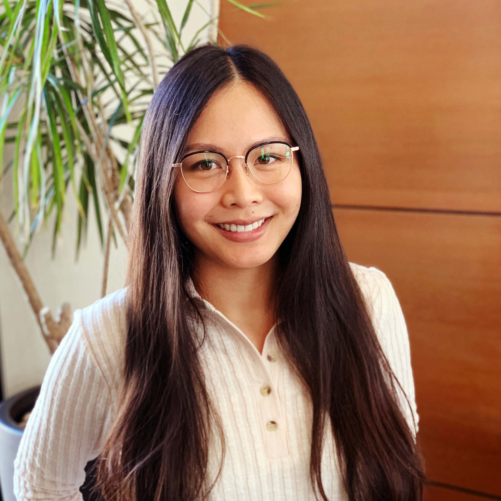
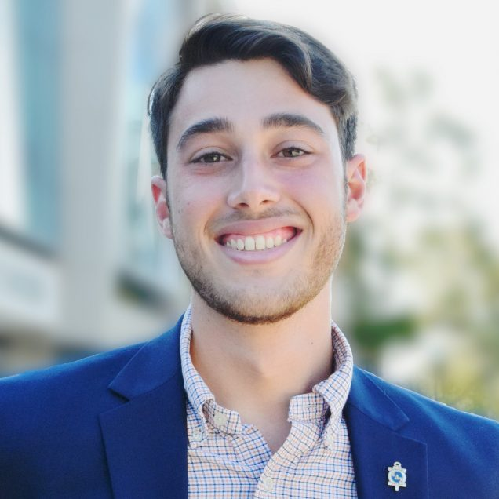

DASC Lab Controls Conversations Seminar Series
The Distributed Aerospace Systems and Control Laboratory (DASC Lab) is hosting a (virtual) controls seminar series, to forge connections amongst the controls community, to help spark new ideas, and idenitify interesting and challenging research directions.
The format of each talk is very flexible. Roughly speaking, we think a good structure is a 30 min presentation followed by a 30 min discussion with the audience.
The seminars will be hosted through Zoom, and are open for anyone to attend. If the speakers agree to it, we would like to record the talks, and will later be made publicly available on Youtube.
Lead by Prof. Dimitra Panagou, our lab is at both the Robotics and Aerospace Engineering departments of the University of Michigan, Ann Arbor USA. We generally focus on questions around safety critical controls, resilient multiagent systems, and human-robot interaction. More information about our lab is available here.
Jan-April 2023
For the Winter 2023 term, seminars will be on Tuesdays 12noon-1pm EST.
Meeting Link: https://umich.zoom.us/j/99623556902
Passcode: dasc-lab

|
Jan 17: Heng (Hank) YangHarvard University Object Pose Estimation with Statistical Guarantees: Conformal Keypoint Detection and Geometric Uncertainty Propagation |
|  |
Jan 31: Kunal GargMassachusetts Institute of Technology Safe recovery of dynamical systems from actuator faults Links from the chat: |
|  |
Feb 7: James UsevitchMIT Lincoln Labs Robust and Resilient Autonomous Systems |
|  |
Feb 14: SiQi ZhouUniversity of Toronto Neural Networks as Add-on Modules for Improved Performance of Robot Control Systems |
|  |
Feb 28: Prithvi AkellaCalifornia Institute of Technology Probabilistic Safety Verification |
|  |
Mar 14: Karen LeungUniversity of Washington Revisiting "what it means to be safe?" for human-robot interactions |
|  |
Mar 28: Max CohenBoston University (Topic TBD) |
Apr 11: Lukas BrunkeUniversity of Toronto, and Technical University of Munich
(Topic TBD) |
|
Apr 25: Petar BevandaTechnical University of Munich
Learning Koopman Operator Dynamical Models |
We are looking for speakers! If you would like to present, or would like to nominate a speaker, please reach out to me, Devansh Agrawal, at devansh@umich.edu. If the above dates/times don't work for you, we can arrange a different time too.